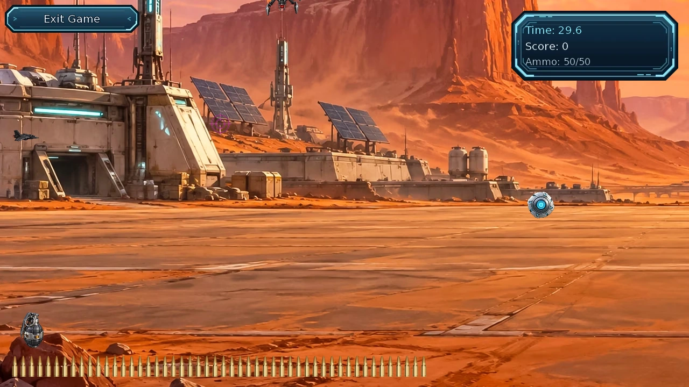
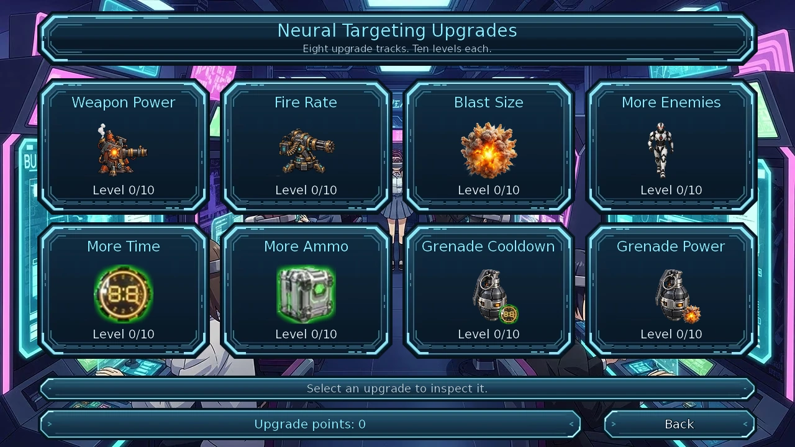
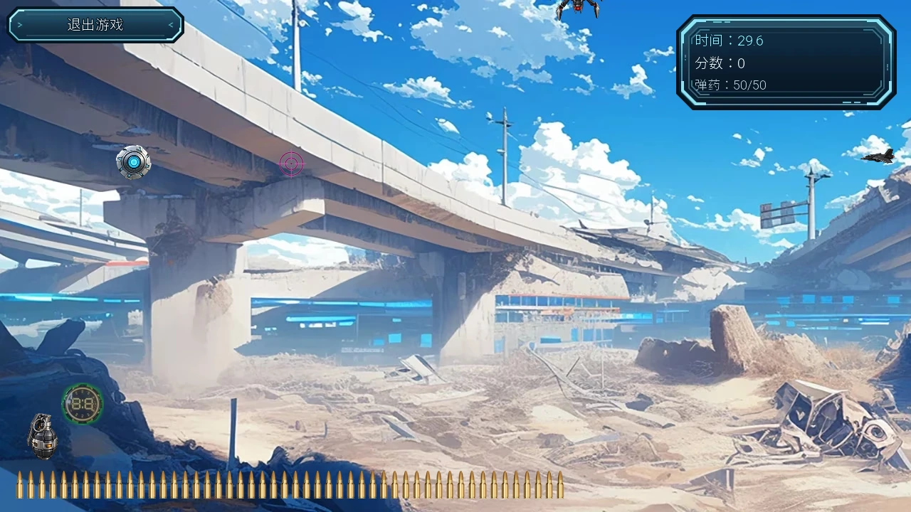
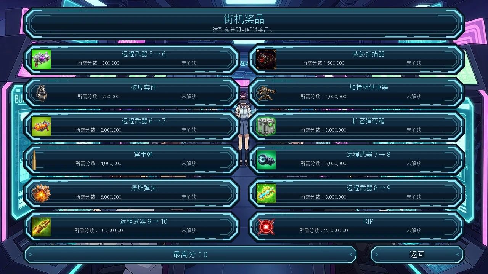

Select a screenshot to enlarge it. Screens show example inventories and progress.
Start at the Entertainment Tower
Neural Targeting is a timed shooter with permanent upgrade points, a saved high score and twelve unlockable arcade prizes. Travel to Future → Prime Sector → Entertainment Tower and choose Neural Targeting Practice. The map caption is Entertainment Tower; this is the arcade location described by older community guides.
A visit has a base cost of 15 in-game minutes and 15 Calm, and the practice action grants +1 Ability. The shooter’s real-time round clock is separate from those in-game minutes. Try Again starts another round in the same visit; leaving settles the visit’s additional Ability award. The upgrade and prize menus each take 0 minutes.
Aim, shoot and keep the round alive
- Aim with the mouse and shoot with the left button. Shots use the visible crosshair position, which can lag behind the pointer at low Ability.
- At Fire Rate 0, click for individual shots. From level 1 onward, hold for a limited burst; release and press again to start another. Level 10 permits continuous held fire.
- Right-click or use the grenade icon to throw a grenade. Grenades are available from the start, do not consume bullets and do not require crosshair aiming. They detonate after about 1 second and damage every visible enemy once.
- Shoot ammo boxes before running out: they refill to your current maximum. Shooting the last bullet ends the round if no refill was gained on that shot.
- Shoot clocks for more time. Incoming red projectiles remove 1 second if they hit; intercepting one counts as a successful shot but gives no points.
- Use Exit Game to leave early. The current round still settles its score and upgrade points; the best score across retries determines the visit reward.

Pickups, grenades and stat bonuses
| Feature | Current effect |
|---|---|
| Starting time | 30 seconds, +2 per More Time level; Quick Draw adds 7 seconds. |
| Starting ammo | 50, +3 per More Ammo level. Expanded Ammo Case doubles the resulting capacity. |
| Clock | +5 seconds at More Time 0, +0.3 seconds per upgrade level, reaching 8 seconds; also awards 50 points. |
| Ammo box | Full refill and 50 points. More Ammo shortens its spawn gap from 8 to 4 seconds. |
| Grenade | 15-second cooldown, reduced by 0.5 seconds per Grenade Cooldown level. Damage 1+Grenade Power level; Fragmentation Kit adds 3, then Resonance Amplifier doubles it. |
| Ability | Raw Ability 90 removes aiming lag. Archery Focus improves tracking below that threshold. |
| Perception | Effective Perception makes ordinary targets easier to see and remain longer. Threat Scanner separately accelerates their reveal; it does not extend their total lifetime. |
Grenades damage visible enemies and bosses without using the bullet target limit. They do not collect ammo boxes/clocks or intercept the incoming projectiles for you. Fragmentation Kit’s second flash is visual, not a second damage pulse.
Enemy growth and the three bosses
| Ordinary target | Starting health | Base kill score |
|---|---|---|
| Large / medium / small pop-ups | 1 | 50 /100 /250 |
| Approaching robot | 1 | 50 |
| Stationary shooters | 1 | 50 |
| Spider | 2 | 150 |
| Flyer | 1 | 200 |
| Bouncer | 1 | 175 |
| Mini-boss | 5 | 500 |
Every 20 seconds of active round time, newly spawned ordinary enemies gain 1 extra Health and an additional 20% of their base kill score. This score growth is additive. Existing enemies retain their spawn values. Keep upgrading damage as you try to survive longer.
| Boss | Arrival | Health | Defeat score |
|---|---|---|---|
| First boss | 90 seconds after round start | 500 | 75,000 |
| Tank boss | 90 seconds after defeating the first boss | 1000 | 150,000 |
| Fortress boss | 90 seconds after defeating the tank | 2500 | 375,000 |
Bosses have fixed health and fixed defeat awards. The next boss waits for the previous one to be defeated; surviving a long time alone does not skip that requirement. Boss fire threatens your remaining time, so continue watching for projectiles while dealing damage.
Streaks, extra time and upgrade points
A shot that damages a target or intercepts a projectile counts as a hit. From five consecutive hits onward, the accumulated streak score receives a multiplier: five hits give×2, six give×3, and so on. The additional streak score settles on a miss or when the round finishes. Grenade kills add points to the bank but do not each count as another successful bullet shot.
Score milestones add 5 seconds each: every 5,000 points through 50,000, then progressively larger gaps that grow by 8%. Unsettled streak score can make the visible score jump when the streak ends. Round-end scoring still earns upgrade points even if there is no time left to use a resulting bonus.
| Final round score | Upgrade points |
|---|---|
| Below 2,500 | 0 |
| 2,500–3,999 | 1 |
| 4,000–5,999 | 3 |
| 6,000–7,999 | 8 |
| 8,000+ | floor((score ÷2,000)²) |
Each round grants its one final point award, not the sum of all lower tiers. Retries can earn more points in the same visit. Points, high score and purchased levels are saved progression.
The eight permanent upgrade tracks
Open Neural Targeting Upgrades outside the round. Every track has levels 0–10 and the same next-level prices. Spending points changes the selected track; it does not spend your high score.
Show all tracks and level prices
| Track | Effect |
|---|---|
| Weapon Power | Adds 1 bullet damage per level. Also raises the number of overlapping enemies one shot can damage: 1 at Levels 0–2, 2 at 3–5, 3 at 6–8, 4 at 9, and 5 at 10, before projectile prizes. |
| Fire Rate | Increases how many bullets one held press fires. Levels 1–9 allow a burst of maximum ammo × level ÷ 10 , rounded down, with at least one shot. Level 0 is single-shot; Level 10 is continuous held fire. The normal firing interval is about 6 shots/second . |
| Blast Size | Adds 1.5 pixels to bullet hit radius per level, reaching 15 pixels at Level 10 before projectile prizes. The larger flash is a visual effect; it is not a grenade-sized blast. |
| More Enemies | Adds one extra pop-up spawner per level . Also increases the spawn rate of robots, shooters, spiders, flyers, bouncers, and mini-bosses, reaching roughly twice the base rate at Level 10. |
| More Time | Adds 2 starting seconds per level; increases each clock's bonus by 0.3 seconds ; shortens clock spawn gaps from 10 seconds to 5 seconds . |
| More Ammo | Adds 3 maximum bullets per level, giving 80 at Level 10 before Expanded Ammo Case. Shortens ammo-box spawn gaps from 8 seconds to 4 seconds . Each box still refills to your current maximum. |
| Grenade Cooldown | Removes 0.5 seconds from the cooldown per level: 15 → 10 seconds . |
| Grenade Power | Adds 1 grenade damage per level: 1 → 11 , before Fragmentation Kit. |
| Level bought | Point cost |
|---|---|
| 1 | 10 |
| 2 | 30 |
| 3 | 100 |
| 4 | 300 |
| 5 | 1,000 |
| 6 | 3,000 |
| 7 | 10,000 |
| 8 | 30,000 |
| 9 | 90,000 |
| 10 | 250,000 |

Activate the twelve arcade prizes
A high score unlocks a prize, but does not activate it automatically. Open Arcade Prizes and use Activate on an available reward. Activating does not spend the score or upgrade points. Ranged-weapon rewards additionally require your actual Ranged Weapon at least level 5 and the earlier ranged rewards activated in order.
Show all twelve score thresholds
| High score | Prize | Effect |
|---|---|---|
| 300,000 | Ranged Weapon 5 → 6 | Upgrades your actual Ranged Weapon to Level 6. Adds 1 bullet damage over Level 5 in Neural Targeting. |
| 500,000 | Threat Scanner | Shortens the reveal fade of pop-ups, approaching robots, shooters, ammo boxes, and clocks to at most 0.1 seconds . It does not extend their lifetime or slow their fade-out. |
| 750,000 | Fragmentation Kit | Adds 3 grenade damage and a second visual flash. The flash does not apply a second damage hit. |
| 1,000,000 | Gatling Feed | Doubles held-fire speed from about 6 to 12 shots/second . Burst length still follows your Fire Rate level; Level 0 remains single-shot. |
| 2,000,000 | Ranged Weapon 6 → 7 | Upgrades your actual Ranged Weapon to Level 7. |
| 3,000,000 | Expanded Ammo Case | Doubles maximum ammunition after More Ammo: 100 at More Ammo Level 0, 160 at Level 10. Ammo boxes refill the enlarged capacity; the bullet display uses two rows. |
| 4,000,000 | Armor-Piercing Rounds | Adds 2 bullet damage , 2 pixels of hit radius , and 1 extra enemy to the per-shot target limit. |
| 5,000,000 | Ranged Weapon 7 → 8 | Upgrades your actual Ranged Weapon to Level 8. |
| 6,000,000 | Explosive-Tip Rounds | Adds the same bullet bonuses as Armor-Piercing Rounds; they stack. |
| 8,000,000 | Ranged Weapon 8 → 9 | Upgrades your actual Ranged Weapon to Level 9. |
| 10,000,000 | Ranged Weapon 9 → 10 | Upgrades your actual Ranged Weapon to Level 10. |
| 20,000,000 | RIP — Radically Invasive Projectile | Adds another 2 bullet damage , 2 pixels of hit radius , and 1 extra enemy to the target limit, stacking with both earlier projectile prizes. |
The five ranged rewards improve your actual equipment. The remaining prizes improve this shooter; they are not consumable inventory ammunition. Activated prizes persist, and the ranged rewards do not reduce a weapon already above their awarded level.
Ability rewards and a practical progression route
| Best round in this visit | Additional Ability on leaving |
|---|---|
| Below 8,000 | 0 |
| 8,000–14,999 | 1 |
| 15,000+ | 2 |
This additional award happens once per visit, using the best round across retries. It is separate from the practice action’s baseline+1 Ability. Ten retries do not award the additional Ability ten times, though each completed round can award upgrade points.
- Begin with accurate short rounds and collect ammo and clocks. A little Ability training can make aiming much easier; Ability 90 removes lag.
- Buy useful low-cost damage, time and ammo levels before pursuing a long survival run. Fire Rate changes held bursts; early levels are not unlimited automatic fire.
- Add More Enemies when you can handle them, since more targets mean more scoring chances and more incoming fire.
- Activate newly available prizes between visits. Ranged 5 is a separate prerequisite for the first equipment prize.
- For later goals, build sustained damage and survival. The Sanctum trophy target is a saved high score of 25,000,000, beyond the final 20,000,000 arcade prize.
Related guides: Combat, Blacksmith and Forge and Items.
前往娱乐塔开始练习
神经瞄准是一款限时射击小游戏，拥有永久升级点数、存档最高分与十二项街机奖品。前往未来 → 核心区（Prime Sector）→ 娱乐塔，选择神经瞄准练习。地图上的地点名是「娱乐塔」，也就是社区旧攻略所指的游戏厅。
每次进入的基础消耗为15个游戏内分钟与15镇定，练习动作本身给予能力+1。射击回合的现实倒计时与这15分钟分开计算。结果页的重试可在同一次到访中再玩一局；离开时结算本次到访的额外能力奖励。升级与奖品菜单均耗时0分钟。
瞄准、射击与维持回合
- 用鼠标移动瞄准，左键射击。子弹按画面准星的位置判定，能力较低时，准星会落后于鼠标。
- 射速0级时逐次点击；从1级起可按住进行有限连射，松开再按可开始下一轮。10级才是持续按住射击。
- 右键或点击手榴弹图标可投掷手榴弹。初始就能使用，不消耗子弹，也不需要用准星瞄准。约1秒后爆炸，对当时可见的每个敌人各造成一次伤害。
- 弹药耗尽前及时射击补给箱，它会补满至当前容量。如果最后一发没有取得补给，回合会在弹药归零时结束。
- 射击时钟增加时间。红色来袭弹命中会扣1秒；击落来袭弹算一次成功命中，但本身不给分。
- 可用退出游戏提前离开；当前局仍结算得分与升级点数，重试各局中的最高分决定本次到访奖励。

补给、手榴弹与属性加成
| 项目 | 当前效果 |
|---|---|
| 起始时间 | 30秒；每级更多时间再加2秒；快速拔枪额外增加7秒。 |
| 起始弹药 | 50发；每级更多弹药再加3发；扩容弹药箱将最终容量翻倍。 |
| 时钟 | 更多时间0级时加5秒，每级再加0.3秒，10级加8秒；同时得50分。 |
| 弹药箱 | 补满至当前容量，并得50分；更多弹药可将补给间隔从8秒缩短至4秒。 |
| 手榴弹 | 冷却15秒，手榴弹冷却每级减少0.5秒；伤害为1加手榴弹威力等级，破片套件另加3，再由共振放大器翻倍。 |
| 能力 | 基础能力达到90后，准星不再滞后；弓术专注可改善低于此门槛时的跟踪速度。 |
| 感知 | 有效感知使普通目标更易察觉、停留更久；威胁扫描器另行加快显现，不会延长总寿命。 |
手榴弹不受子弹单次目标数量限制，可伤害可见敌人与首领，但不会替你收取弹药箱、时钟或拦截来袭弹。破片套件的第二次闪光只是视觉效果，不会再造成一次伤害。
敌人成长与三场首领战
| 普通目标 | 起始生命 | 基础击败得分 |
|---|---|---|
| 大型／中型／小型弹出目标 | 1 | 50 /100 /250 |
| 接近的机器人 | 1 | 50 |
| 固定射击目标 | 1 | 50 |
| 蜘蛛目标 | 2 | 150 |
| 飞行目标 | 1 | 200 |
| 弹跳目标 | 1 | 175 |
| 小型首领 | 5 | 500 |
每经过20秒有效回合时间，新出现的普通敌人生命增加1，并在基础击败得分上再加20%。得分按基础值累加，不是反复乘1.2。已出现的敌人保留出生时数值，想持续生存就要跟上伤害成长。
| 首领 | 出现时间 | 生命 | 击败得分 |
|---|---|---|---|
| 第一首领 | 开局90秒后 | 500 | 75,000 |
| 坦克首领 | 击败第一首领90秒后 | 1000 | 150,000 |
| 堡垒首领 | 击败坦克90秒后 | 2500 | 375,000 |
首领的生命与击败奖励固定。下一名首领需要先击败上一名，单靠拖长时间不能跳过。首领射击会威胁剩余时间，输出时也要留意来袭弹。
连击、加时与升级点数
命中敌人或击落来袭弹，都算一发成功命中。连续命中五发起，累计连击分会得到倍率：五发为2倍、六发为3倍，以此类推。额外连击分在失误或回合结束时结算。手榴弹击杀可加入累计分数，但不会把每个炸到的目标都算成另一发成功射击。
得分里程碑每次增加5秒：50,000分以内，每5,000分一档；之后间隔逐档增加8%。连击尚未结算时，结束连击可能让分数突然跳高。即使结束时已经没有剩余时间，最终分数仍会用于发放升级点数。
| 单局最终得分 | 升级点数 |
|---|---|
| 低于2,500 | 0 |
| 2,500–3,999 | 1 |
| 4,000–5,999 | 3 |
| 6,000–7,999 | 8 |
| 8,000以上 | （得分÷2,000）的平方，向下取整 |
每局只给最终分数对应的一份点数，不把下面各档重复相加。同次到访中重试，也能继续赚取点数。点数、最高分与已购买等级都会保存。
八条永久升级路线
回合外打开神经瞄准升级。每条路线为0–10级，购买下一等级的价格相同。消耗的是升级点数，最高分不会被扣除。
展开全部路线与逐级价格
| 路线 | 效果 |
|---|---|
| 武器威力 | 每级子弹伤害+1；可同时伤害的重叠目标数按等级提高：0–2级1个，3–5级2个，6–8级3个，9级4个，10级5个，另加弹种奖品。 |
| 射速 | 提高一次按住所能发射的数量。1–9级为最大弹药×等级÷10，向下取整且至少1发；0级逐次点击，10级持续按住。通常约每秒6发。 |
| 爆炸范围 | 每级子弹命中半径+1.5像素，10级为15像素，另加弹种奖品；不是覆盖整片画面的手榴弹范围。 |
| 更多敌人 | 每级增加一组弹出目标生成，并提高其他普通敌人的出现频率；10级时后者约为基础频率的两倍。 |
| 更多时间 | 每级起始时间+2秒、时钟收益+0.3秒，并将时钟间隔由10秒逐步缩短至5秒。 |
| 更多弹药 | 每级最大弹药+3，10级时为80发，扩容弹药箱另算；弹药箱间隔由8秒逐步缩短至4秒。 |
| 手榴弹冷却 | 每级冷却减少0.5秒，从15秒缩短至10秒。 |
| 手榴弹威力 | 每级手榴弹伤害+1，从1提高至11，破片套件与共振放大器另算。 |
| 购买等级 | 升级点数 |
|---|---|
| 1 | 10 |
| 2 | 30 |
| 3 | 100 |
| 4 | 300 |
| 5 | 1,000 |
| 6 | 3,000 |
| 7 | 10,000 |
| 8 | 30,000 |
| 9 | 90,000 |
| 10 | 250,000 |
激活十二项街机奖品
达到最高分门槛只会解锁奖品，不会自动激活。请打开街机奖品，对可用奖品选择激活。激活不消耗最高分或升级点数。远程武器奖励还要求实际远程武器至少5级，并按顺序激活前一档远程奖励。
展开十二项分数门槛
| 最高分 | 奖品 | 效果 |
|---|---|---|
| 300,000 | 远程武器 5 → 6 | 实际远程武器升到6级，小游戏子弹伤害相较5级再加1。 |
| 500,000 | 威胁扫描器 | 将普通弹出目标、接近机器人、固定射手、弹药箱与时钟的显现时间缩短至最多0.1秒；不延长停留时间。 |
| 750,000 | 破片套件 | 手榴弹伤害+3，并增加第二次视觉闪光；不会造成第二次伤害。 |
| 1,000,000 | 加特林供弹器 | 按住射击从约每秒6发提高至12发；连射长度仍看射速等级，0级仍逐次点击。 |
| 2,000,000 | 远程武器 6 → 7 | 实际远程武器升到7级。 |
| 3,000,000 | 扩容弹药箱 | 更多弹药后，再把总容量翻倍：未升级为100发，10级为160发，补给箱按新容量补满。 |
| 4,000,000 | 穿甲弹 | 子弹伤害+2、命中半径+2像素、单发目标数量上限+1。 |
| 5,000,000 | 远程武器 7 → 8 | 实际远程武器升到8级。 |
| 6,000,000 | 爆炸弹头 | 与前一弹种相同的三项加成，并可叠加。 |
| 8,000,000 | 远程武器 8 → 9 | 实际远程武器升到9级。 |
| 10,000,000 | 远程武器 9 → 10 | 实际远程武器升到10级。 |
| 20,000,000 | RIP | 再增加子弹伤害2、半径2像素、单发目标上限1，可与前两种弹药叠加。 |
五档远程奖励会提升实际装备，其他奖品用于强化本小游戏，不是库存中的消耗弹药。激活状态会保留；远程奖励也不会把已经更高的武器降级。

能力奖励与实用成长顺序
| 本次到访的最高单局分数 | 离开时额外能力 |
|---|---|
| 低于8,000 | 0 |
| 8,000–14,999 | 1 |
| 15,000以上 | 2 |
额外能力每次到访只发一次，取重试各局中的最高分，并与练习动作原本的能力+1分开计算。重试十次，不会领十次额外能力；但各局仍可正常赚取升级点数。
- 先练习稳定命中，及时补弹和收时钟。先提高一些能力，瞄准会更顺手；能力90可消除滞后。
- 优先购买实用的低价伤害、时间和弹药升级，再追求长时间生存。射速改变的是按住连射长度，低级不等于无限自动开火。
- 能应付更多目标后，再提高敌人数量；得分机会变多，来袭火力也会增多。
- 回合外激活新奖品。第一档远程装备奖品另需先把实际远程武器升到5级。
- 后期再逐步提高持续输出与生存能力。圣所奖杯要求存档最高分25,000,000，高于最后一项街机奖品的20,000,000门槛。
Adapted and updated from the community Chronoromancer Wiki. Community source and history · CC BY-SA 4.0. Game images © Chronoromancer Studio.